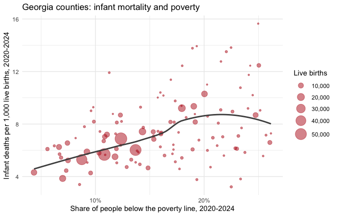

This article puts two datasets side by side: infant mortality from the Georgia Department of Public Health and the poverty rate from the U.S. Census. Infant mortality, the number of babies who die before their first birthday per 1,000 live births, is one of the most widely used measures of a community’s health. The article shows the steps any such analysis needs.
Pick the datasets
gcd_search("infant mortality", n = 3) |> select(name, title, year_min, year_max)
#> # A tibble: 3 × 4
#> name title year_min year_max
#> <chr> <chr> <int> <int>
#> 1 infant_deaths Infant Deaths and Infant Mortality Rates 2000 2025
#> 2 fetal_deaths Fetal Deaths and Fetal Mortality Rates 2000 2025
#> 3 birth_outcomes Birth Outcomes (Low Birthweight and Preterm … 2000 2025
gcd_search("poverty rate", level = "counties", n = 3) |> select(name, title, year_min, year_max)
#> # A tibble: 3 × 4
#> name title year_min year_max
#> <chr> <chr> <int> <int>
#> 1 poverty Poverty (ACS) 2020 2024
#> 2 poverty_by_nativity Poverty by Nativity and Citize… 2020 2024
#> 3 low_income_low_access_tracts Low-Income, Low-Access Tracts … 2025 2025infant_deaths holds infant deaths and live births from
the state’s OASIS system, by county of residence; poverty
is the American Community Survey (ACS) 5-year estimate of the share of
people below the federal poverty line. Before joining them, check that
they share a detail level and a key, and which years they cover:
infant_info <- gcd_describe("infant_deaths")
poverty_info <- gcd_describe("poverty")
intersect(infant_info$detail_levels, poverty_info$detail_levels)
#> [1] "counties" "states"
intersect(infant_info$grain, poverty_info$grain)
#> [1] "year" "county_fips" "tract_geoid"
range(infant_info$years)
#> [1] 2000 2025
range(poverty_info$years)
#> [1] 2020 2024Both publish county rows keyed by county_fips. The ACS
figures are 5-year estimates named by their end year, so the 2024
vintage pools survey responses from 2020 to 2024. We match it with the
infant deaths of 2020 to 2024.
Read the notes first
The dataset’s notes say which columns can’t be added up. Causes and
ages at death nest inside each other (all contains every
cause, and neonatal contains early_neonatal),
so summing across them counts the same deaths more than once:
infant_info$notes$non_additive$column
#> [1] "cause" "age_at_death"Pinning both to all gives one row per county, year and
group. The notes also set a floor on any figure we compute
ourselves:
infant_info$notes$pooled_min_count$reason
#> [1] "OASIS withholds rates based on 1-4 deaths (shown as * on OASIS), so no figure combined from fewer than 5 deaths is given."Pool infant mortality from counts
gcd_columns() names the numerator and denominator of the
rate:
gcd_columns("infant_deaths") |>
filter(!is.na(metric_component)) |>
select(column, metric_component)
#> # A tibble: 2 × 2
#> column metric_component
#> <chr> <chr>
#> 1 num_deaths numerator
#> 2 num_births denominator
infant <- gcd_rows(
"infant_deaths",
detail = "counties",
demographic = "all",
cause = "all",
age_at_death = "all",
year = 2020:2024,
quiet = TRUE
)
infant |>
summarise(county_years = n(),
with_a_rate = sum(!is.na(death_rate_per_1k_births)),
median_births = median(num_births))
#> # A tibble: 1 × 3
#> county_years with_a_rate median_births
#> <int> <int> <int>
#> 1 795 385 258Infant deaths are rare and most of Georgia’s 159 counties are small. In a typical county-year a few hundred babies are born and a single death moves the rate by several points. That is why about half of the county-years have no published rate at all. A county’s rate over several years is the sum of its deaths over the sum of its births, not the average of its yearly rates:
pooled <- infant |>
group_by(county_fips, county_name) |>
summarise(
deaths = sum(num_deaths),
births = sum(num_births),
.groups = "drop"
) |>
mutate(infant_mortality = 1000 * deaths / births)
pooled |> arrange(desc(births))
#> # A tibble: 159 × 5
#> county_fips county_name deaths births infant_mortality
#> <chr> <chr> <int> <int> <dbl>
#> 1 13135 Gwinnett 323 56843 5.68
#> 2 13121 Fulton 389 56491 6.89
#> 3 13089 DeKalb 299 49609 6.03
#> 4 13067 Cobb 229 43244 5.30
#> 5 13063 Clayton 177 19212 9.21
#> 6 13051 Chatham 133 17899 7.43
#> 7 13057 Cherokee 59 15278 3.86
#> 8 13139 Hall 76 13787 5.51
#> 9 13245 Richmond 135 13110 10.3
#> 10 13151 Henry 77 13077 5.89
#> # ℹ 149 more rows
sum(pooled$deaths < 5)
#> [1] 41Even pooled over five years, 41 counties had fewer than five infant deaths, too few for a rate under the dataset’s own rule. We keep their counts for the group sums below but leave them out of any county-level figure.
Pooling and averaging give different answers whenever counties differ in size. Here is the comparison with the published state rows:
state <- gcd_rows("infant_deaths", detail = "states", demographic = "all",
cause = "all", age_at_death = "all", year = 2020:2024,
quiet = TRUE)
pooled |>
summarise(
mean_of_county_rates = mean(infant_mortality),
pooled_from_counts = 1000 * sum(deaths) / sum(births),
births_counted = sum(births)
) |>
mutate(state_pooled = 1000 * sum(state$num_deaths) / sum(state$num_births),
state_births = sum(state$num_births)) |>
as.data.frame()
#> mean_of_county_rates pooled_from_counts births_counted state_pooled
#> 1 6.939697 6.65106 623660 6.65106
#> state_births
#> 1 623660The counties add up to the state row exactly, so the rate pooled from county counts matches the state’s. The plain mean of county rates is further off, because it weighs a county with a hundred births like one with fifty thousand.
Join the poverty rate
poverty <- gcd_rows(
"poverty",
detail = "counties",
year = 2024,
race_iteration = "all",
quiet = TRUE
) |>
select(county_fips, poverty_rate, poverty_rate_moe)
joined <- inner_join(pooled, poverty, by = "county_fips")
nrow(joined)
#> [1] 159The ACS reports a 90% margin of error beside each estimate; for small counties it can be a sizable share of the estimate:
joined |>
mutate(moe_share = poverty_rate_moe / poverty_rate) |>
summarise(median_moe_share = median(moe_share), max_moe_share = max(moe_share))
#> # A tibble: 1 × 2
#> median_moe_share max_moe_share
#> <dbl> <dbl>
#> 1 0.190 0.507
rated <- filter(joined, deaths >= 5)
ggplot(rated, aes(poverty_rate, infant_mortality)) +
geom_point(aes(size = births), alpha = 0.5, colour = "#b91c1c") +
geom_smooth(aes(weight = births), method = "loess", formula = y ~ x,
se = FALSE, colour = "grey30") +
scale_x_continuous(labels = scales::label_percent()) +
scale_size_area(max_size = 8, labels = scales::label_comma()) +
labs(
x = "Share of people below the poverty line, 2020-2024",
y = "Infant deaths per 1,000 live births, 2020-2024",
size = "Live births",
title = "Georgia counties: infant mortality and poverty"
) +
theme_minimal()
Each point is a county with at least five infant deaths in 2020-2024, sized by its births.
cor(rated$poverty_rate, rated$infant_mortality, method = "spearman")
#> [1] 0.3697077County by county the association is modest, a rank correlation of 0.37, partly because even five-year rates in small counties carry a lot of chance variation. Grouping counties by their poverty rate and pooling each group’s counts gives steadier rates. Every county counts here, including those with too few deaths for a rate of their own:
thirds <- joined |>
mutate(poverty_group = cut(
poverty_rate,
quantile(poverty_rate, c(0, 1 / 3, 2 / 3, 1)),
labels = c("Lowest third", "Middle third", "Highest third"),
include.lowest = TRUE
))
thirds |>
group_by(poverty_group) |>
summarise(counties = n(),
deaths = sum(deaths),
births = sum(births),
infant_mortality = 1000 * deaths / births)
#> # A tibble: 3 × 5
#> poverty_group counties deaths births infant_mortality
#> <fct> <int> <int> <int> <dbl>
#> 1 Lowest third 53 2345 395522 5.93
#> 2 Middle third 53 1229 155432 7.91
#> 3 Highest third 53 574 72706 7.89Babies born in the middle and highest-poverty thirds of counties die before their first birthday at a rate about a third higher than babies born in the lowest-poverty third. The lowest-poverty third holds most of the state’s births, so it sets the state’s rate.
What these figures can’t tell
- Association, not causation. Poverty is one of many ways counties differ; nothing here says a county’s poverty rate causes infant deaths.
- Counties are not families. A county’s poverty rate describes all of its residents, not the families of the babies born there.
- Estimates carry error. The ACS poverty rate is a survey estimate with a margin of error, larger in small counties; a county near a group boundary could sit in either.
- Small counts swing. A county’s rate on a few deaths says little on its own; group and pool before comparing places.
-
Infant mortality has many causes. The dataset’s
causeandage_at_deathfilters split deaths into prematurity, birth defects, sudden infant death and others, which this article does not look at.